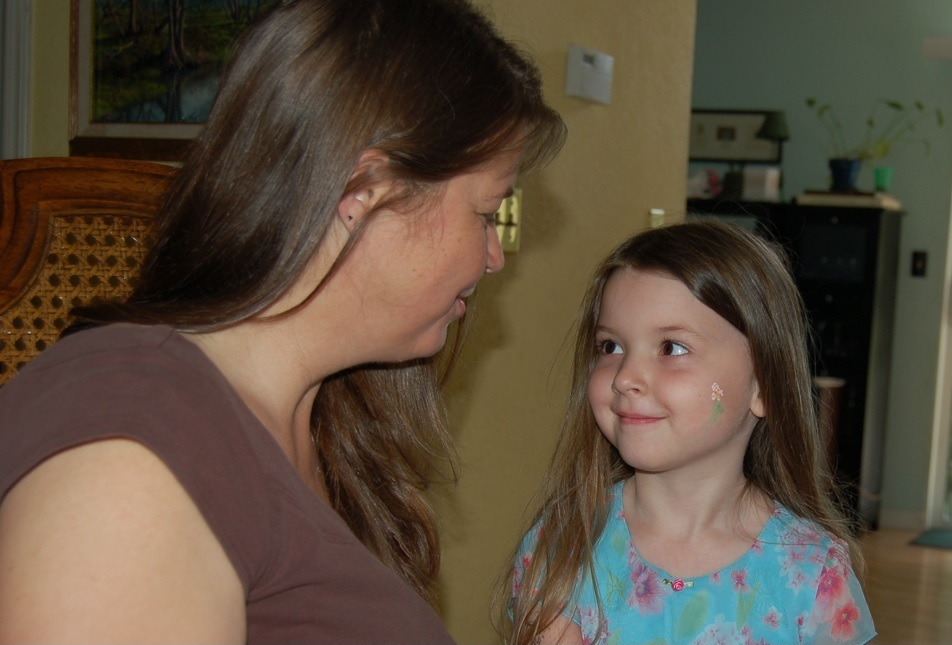
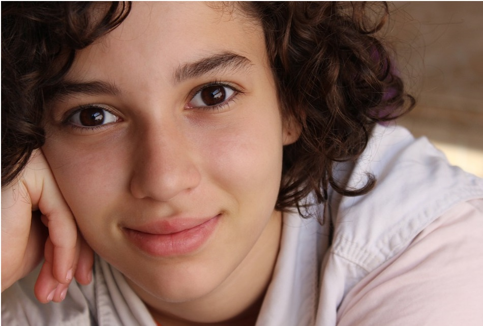

Information for Parents
Downloadable Information Sheet: Synaesthesia in Children
Please click here for our downloadable information sheet on childhood synaesthesia. This sheet allows parents to pass information to teachers. Simply download the pdf, complete the sections relevant to your child, and hand to your teacher.What is synaesthesia? Synaesthesia is a condition that causes an unusual 'merging of the senses'. For example, hearing sounds might cause taste sensations in the mouth (eg. a doorbell might trigger the taste of salt). Other synesthetes might experience letters, numbers or words as coloured in some way (eg. 'A' might be red, 'Monday' might be green) and so on. Synaesthesia has many different forms, is equally common in boys & girls, has a neurological, & genetic basis, and is recognised by health bodies such as the NHS (UK National Health Service) although its exact causes are still being researched.
What to do if your child has synaesthesia? Most adults with synaesthesia have had it since childhood and would say it's not obtrusive, it does not affect day-to-day life in any negative way, and it feels perfectly normal to experience the world in this way. So if your child tells you he or she has synaesthesia, it may simply be a case of listening and understanding, with no more action needed beyond that. But individual children react differently to having synaesthesia. Some feel indifferent, some feel highly positive, almost all are surprised to learn that not everyone else has synaesthesia. However, some children experience notable difficulties from synaesthesia, for example, if their synaesthesia is overwhelming or involves sensing pain (most synaesthesias do not). In this case, you might wish to discuss your child’s synaesthesia with the school or with your GP, who may be able to refer you for support. You will be the best person to judge if this feels right. Below are some suggestions for parents you might find helpful.
- 1. Educate the educators. Most parents who contact us at the University of Sussex are simply trying to convince teachers that synaesthesia exists and that it may be having some effect on their child. Children with synaesthesia are sometimes disbelieved, and this can be unsettling for a child. Synaesthesia can be difficult to understand because it creates a sense of reality that can be very different to one’s own. For this reason we provide here a downloadable information sheet for parents to give to teachers. This gives teachers information about synaesthesia in children, and a link to our online Teacher’ webpage about supporting children with synaesthesia in the classroom.
2. Understand your child’s experiences. For parents it can be confusing or even alarming to hear their child describe synaesthesia for the first time. But in most cases the child will be giving a simple description of everyday synaesthesia experienced by millions of children and adults worldwide. Ask your child to describe his or her experiences and take notes (e.g., What colour is A? What colour is B?). People with synaesthesia tend to be very consistent in their descriptions over time, so ask your chlild more than once. Adults synaesthetes with coloured letters or numbers tend to be around 90-100% consistent; 10 yr old synaesthetes around 70%; 7 yr old synaesthetes around 55%; 6 yr old synaesthetes around 50%.

- 3. Assess yourself. Parents who think their child may be a synaesthete should ask themselves whether they are also synaesthetes, because evidence suggests it is a largely inherited trait. Keep in mind that the particular type of synaesthesia can vary from parent to child. So an adult who experiences synaesthetic colours might have a child who experiences tastes and smells.
- 4. Help your child to celebrate synaesthesia. Synaesthesia is linked to many benefits, such as better memory and increased creativity. Although your child may feel slightly alienated when first realising she is unusual among his or her peers, you can show how to view synaesthesia as a positive attribute. Children are often open to synaesthesia when they find a positive space to experience it

- 5. Encourage the benefits. Help your child to use synaesthesia in beneficial ways. If school work requires your child to remember numbers (a date in history, the value of pi etc.) you could suggest using synaesthesia as a memory aid. Synaesthetes can improve their memory for numbers, say, by remembering the colours that accompany them. Explore with your child other ways synaesthesia can aid them in day-to-day life.
- 6. Foster a community. Help your child realise he/she is certainly not alone! The average UK primary school has a handful of synaesthetic pupils at any given time. Make contact with other synaesthetes via national synaesthesia associations, details of which are given here. Some societies host email discussions where synaesthetes can share their experiences, post questions, or ask advice from academics.
National Synaesthesia Associations and Synaesthesia Web Communities
UK: http://www.uksynaesthesia.com
USA: http://synesthesia.info
Germany: http://www.synaesthesie.org
Australia and New Zealand: http://www.synesthesia.com.au
Belgium: http://www.doctorhugo.org/synaesthesia/
Netherlands: http://www.synesthesie.nl
7. Get your child assessed. We are developing a series of tests for the assessment of synaesthesia in children for use by educational psychologists. If your child has not been assessed for synaesthesia already you may wish to have them assessed by qualified professional (such as an educational psychologist, contactable by your school). You can also direct them to our in-house app (available from Spring 2022). The app will test for two of the more common forms of synaesthesia 1) Grapheme colour synaesthesia (whereby colours are associated with letters or numbers) and 2) Letter personification synaesthesia (whereby personalities and gender are associated with letters).
For more information about synaesthesia you may find our FAQs page useful.
In the interests of anonymity we have not pictured children with synaesthesia on our website. Our photographs are reproduced from the following sources: http://tinyurl.com/synsourceimag06; http://tinyurl.com/synsourceimag07; http://tinyurl.com/synsourceimag08